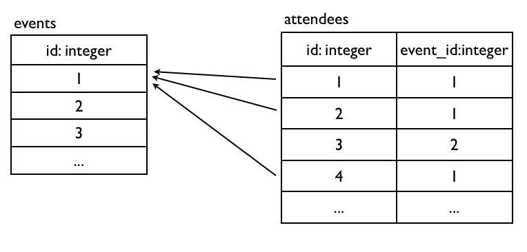
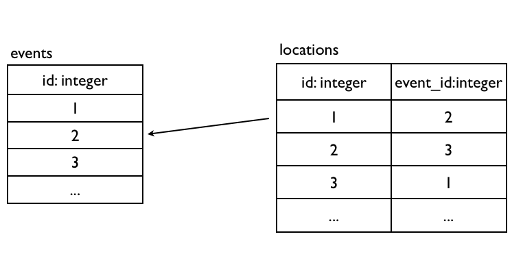
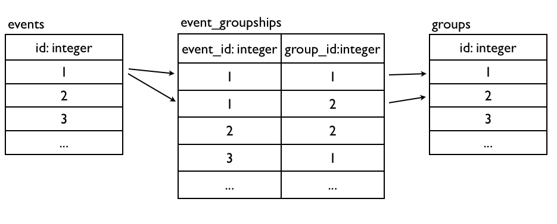

ActiveRecord - 基本操作与关联设计
All problems in computer science can be solved by another level of indirection(abstraction) - David Wheeler …except for the problem of too many layers of indirection. - Kevlin Henney’s corollary
请注意本章内容衔接前两章，请先完成前两章内容。
ORM 与抽象渗漏法则
ORM (Object-relational mapping ) 是一种对映设关联式资料与对象资料的程式技术。对象导向和从数学理论发展出来的关联式数据库，有著显著的区别，而 ORM 正是解决这个不匹配问题所产生的工具。它可以让你使用对象导向语法来操作关联式数据库，非常容易使用、撰码十分有效率，不需要撰写繁琐的SQL语法，同时也增加了程式码维护性。
不过，有些熟悉 SQL 语法的程式设计师反对使用这样的机制，因为直接撰写 SQL 可以确保操作数据库的执行效率，毕竟有些时候 ORM 产生出来的 SQL 效率不是最佳解，而你却不一定有经验能够意识到什么时候需要担心或处理这个问题。
知名软件人 Joel Spolsky (他有两本中文翻译书值得推荐：约耳趣谈软件和约耳续谈软件，悦知出版) 有个理论：抽象渗漏法则：所有重大的抽象机制在某种程式上都是有漏洞的。有非常多程式设计其实都是在建立抽象机制，C 语言简化了组合组言的繁杂、动态语言如 Ruby 简化了 C 语言、TCP 协定简化了 IP 通讯协定，甚至车子的挡风玻璃跟雨刷也简化了下雨的事实。
但是这些抽象机制或多或少都会力有未及的地方，用 C 语言撰写的 Linux 核心也包括少量组合语言、部分 Ruby 套件用 C 语言撰写扩充来增加效能、保证信息会抵达 TCP 信息，碰到 IP 封包在路由器上随机遗失的时候，你也只会觉得速度很慢、即使有挡风玻璃跟雨刷，开车还是必须小心路滑。
当某人发明一套神奇可以大幅提升效率的新程式工具时，就会听到很多人说：「应该先学会如何手动进行，然后才用这个神奇的工具来节省时间。」任何抽象机制都有漏洞，而唯一能完美处理漏洞的方法，就是只去弄懂该抽象原理以及所隐藏的东西。这是否表示我们应该永远只应该使用比较低阶的工具呢？不是这样的。而是应该依照不同的情境，选择效益最大的抽象化工具。以商务逻辑为多的 Web 应用程式，选择动态语言开发就相对合适，用 C 语言开发固然执行效率极高，但是完成相同的功能却需要极高的人月开发时数。如果是作业系统，使用无法随意控制内存分配的动态语言也显然不是个好主意。
能够意识到什么时候抽象化工具会产生渗漏，正是”有纯熟经验”的程式设计师和”新手”设计师之间的差别。ORM 虽然替我们节省了工作的时间，不过对资深的程式设计师来说，学习 SQL 的时间还是省不掉的。这一切都似乎表示，即使我们拥有愈来愈高阶的程式设计工具，抽象化也做得愈来愈好，要成为一个由高阶到低阶都纯熟的程式设计专家是愈来愈困难了(也越来越稀有及宝贵)。
建立新 Model
首先，让我们再示范如何建立一个 Model：
rails g model category
这个指令会产生几个档案
category.rb
category_test.rb
categories.yml
xxxxxxxx_create_categories.rb
打开 xxxxxxxx_create_categories.rb 你可以看到数据表的定义，让我们加上几个栏位吧，除了建立categiries表，同时也帮events加上一个外部键让两个表可以关连起来，在后一章会用到：
class CreateCategories < ActiveRecord::Migration
def change
create_table :categories do |t|
t.string :name
t.integer :position
t.timestamps
end
add_column :events, :category_id, :integer
add_index :events, :category_id
end
end
接着执行以下指令便会产生出数据库数据表
bin/rake db:migrate
db:migrate 指令会将上述的 Ruby 程式变成以下 SQL 执行。
CREATE TABLE categories (
"id" INTEGER PRIMARY KEY AUTOINCREMENT NOT NULL,
"name" varchar(255) DEFAULT NULL,
"position" int(4) DEFAULT NULL,
"created_at" datetime DEFAULT NULL,
"updated_at" datetime DEFAULT NULL);
接着我们打开 category.rb 你可以看到
class Category < ActiveRecord::Base
end
这是一个继承 ActiveRecord::Base 的 Category 类别，你不需要定义这个Model有哪些栏位，Rails会自动根据数据表纲要决定这个Model有哪些属性。
我们在学习 Ruby 的时候提过 irb 这个互动工具，而 Rails 也提供了特殊的 irb 介面叫做 console，让我们可以直接与 Rails 程式互动：
bin/rails console (可以简写成 bin/rails c)
通过 console，我们可以轻易的练习操作 ActiveRecord。
数据表关联设计
ActiveRecord可以用Associations来定义数据表之间的关联性，这是最被大家眼睛一亮ORM功能。到目前为止我们用了ActiveRecord来操作基本的数据库CRUD，但是还没充分发挥关联式数据库的特性，那就是通过primary key和foreign keys将数据表互相关连起来。
Primary Key主键是一张数据表可以用来唯一识别的栏位，而Foreign Key外部键则是用来指向别张数据表的Primary Key，如此便可以产生数据表之间的关联关係。了解如何设计正规化关联式数据库请参考附录基础。
Primary Key这个栏位在Rails中，照惯例叫做id，型别是整数且递增。而Foreign Key栏位照惯例会叫做{model_name}_id，型别是整数。
一对多关联one-to-many

一对多关联算是最常用的，延续Part1的Event Model范例，一个Event拥有很多Attendee。我们来新增Attendee Model：
rails g model attendee name:string event_id:integer
执行bin/rake db:migrate产生attendees数据表。
分别编辑app/models/event.rb和app/models/attendee.rb：
class Event < ActiveRecord::Base
has_many :attendees # 复数
#...
end
class Attendee < ActiveRecord::Base
belongs_to :event # 单数
end
同样地，belongs_to和has_many这两个方法，会分别动态新增一些方法到Attendee和Event Model上，让我们进入rails console实际操作数据库看看：
范例一，建立Attendee对象并关联到Event:
e = Event.first
a = Attendee.new( :name => 'ihower', :event => e )
# 或 a = Attendee.new( :name => 'ihower', :event_id => e.id )
a.save
e.attendees # 这是阵列
e.attendees.size
Attendee.first.event
范例二，从Event对象中建立一个Attendee:
e = Event.first
a = e.attendees.build( :name => 'ihower' )
a.save
e.attendees
范例三，直接从Event对象中建立一个Attendee:
e = Event.first
a = e.attendees.create( :name => 'ihower' )
e.attendees
范例四，先建立Attendee对象再放到Event中:
e = Event.first
a = Attendee.create( :name => 'ihower' )
e.attendees << a
e.attendees
范例五，根据特定的Event查询Attendee
e = Event.first
e.id # 1
a = e.attendees.find(3)
attendees = e.attendees.where( :name => 'ihower' )
这样就可以写出限定在某个Event下的条件查询，用这种写法可以避免一些安全性问题，不会让没有权限的使用者搜寻到别的Event的Attendee。
范例六，删除
e = Event.first
e.attendees.destroy_all # 一笔一笔删除 e 的 attendee，并触发 attendee 的 destroy 回呼
e.attendees.delete_all # 一次砍掉 e 的所有 attendees，不会触发个别 attendee 的 destroy 回呼
有个口诀可以记起来：有Foreign Key的Model，就是设定
belongs_to的Model。
学到这里，还记得上一章建立的Category吗？它也要跟Event是一对多的关係，让我们补上程式吧：
class Category < ActiveRecord::Base
has_many :events
end
class Event < ActiveRecord::Base
belongs_to :category
# ...
end
一对一关联one-to-one

一对一关联算是一对多关联的一种特例情况。假设一个Event拥有一个Location。来新增一个Location Model，其中的event_id就是外部键栏位：
rails g model location name:string event_id:integer
执行bin/rake db:migrate产生locations数据表。
分别编辑app/models/event.rb和app/models/location.rb：
class Event < ActiveRecord::Base
has_one :location # 单数
#...
end
class Location < ActiveRecord::Base
belongs_to :event # 单数
end
belongs_to和has_one这两个方法，会分别动态新增一些方法到Location和Event Model上，让我们进入rails console实际操作数据库看看，通过Associations你会发现操作关联的对象非常直觉：
范例一，建立Location对象并关联到Event：
e = Event.first
l = Location.new( :name => 'Hsinchu', :event => e )
# 等同于 l = Location.new( :name => 'Hsinchu', :event_id => e.id )
l.save
e.location
l.event
Event.first会捞出events table的第一笔资料，如果你第一笔还在，那就会是Event.find(1)。同理，Event.last会捞出最后一笔。
范例二，从Event对象中建立一个Location：
e = Event.first
l = e.build_location( :name => 'Hsinchu' )
l.save
e.location
l.event
范例三，直接从Event对象中建立一个Location：
e = Event.first
l = e.create_location( :name => 'Hsinchu' )
e.location
l.event
多对多关联many-to-many


另一种常见的关联模式则是多对多，一笔资料互相拥有多笔资料，例如一个Event有多个Group，一个Group有多个Event。多对多关联的实作必须多一个额外关联用的数据表(又做作Join table)，让我们来建立Group Model和关联用的EventGroupship Model，其中后者定义了两个Foreign Keys：
rails g model group name:string
rails g model event_groupship event_id:integer group_id:integer
执行bin/rake db:migrate产生这两个数据表。
分别编辑app/models/event.rb、app/models/group.rb和app/models/event_groupship.rb：
class Event < ActiveRecord::Base
has_many :event_groupships
has_many :groups, :through => :event_groupships
end
class EventGroupship < ActiveRecord::Base
belongs_to :event
belongs_to :group
end
class Group < ActiveRecord::Base
has_many :event_groupships
has_many :events, :through => :event_groupships
end
这个Join table笔者的命名习惯会是ship结尾，用以凸显它的关联性质。另外，除了定义Foreign Keys之外，你也可以自由定义一些额外的栏位，例如记录是哪位使用者建立关联。
blongs_to和has_many我们见过了，这里多一种has_many :through方法，可以神奇地把Event和Group关联起来，让我们进入rails console实际操作数据库看看：
范例，建立双向关联记录:
g = Group.create( :name => 'ruby taiwan' )
e1 = Event.first
e2 = Event.create( :name => 'ruby tuesday' )
EventGroupship.create( :event => e1, :group => g )
EventGroupship.create( :event => e2, :group => g )
g.events
e1.groups
e2.groups
Rails还有一种旧式的has_and_belongs_to_many方法也可以建立多对多关係，不过已经很少使用，在此略过不提。
关连的参数
以上的关联方法blongs_to、has_one和has_many都还有一些可以定制的参数，让我们来介绍最常用的两个参数：
order
has_many可以通过:order参数指定顺序：
class Event < ActiveRecord::Base
has_many :attendees, :order => "id desc"
#...
end
dependent
可以设定当对象删除时，也会顺便删除它的has_many对象：
class Event < ActiveRecord::Base
has_many :attendees, :dependent => :destroy
end
:dependent可以有三种不同的删除方式，分别是：
-
:destroy会执行attendee的destroy回呼 -
:delete不会执行attendee的destroy回呼 -
:nullify这是预设值，不会帮忙删除attendee
要不要执行attendee的删除回呼效率相差不少，如果需要的话，必须一笔笔把attendee读取出来变成attendee对象，然后呼叫它的destroy。如果用
:delete的话，只需要一个SQL语句就可以删除全部attendee。